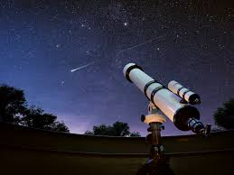

Let's start this again. My name is jorge vega, i am 24 years old. Currently I'm majoring in computer science. While at the same time working a full time + OT job. When it comes to hobbies ther're all over the place so i can explain some of the by calling them...
For any astronomy news i tend to look in the Nasa webpage. We can even reach the webpage by clicking on the picture
Now for any hobbies that require physical fatigue, i placed them in a ranking from highest to least favorite
| activities | category |
Starved Rock state park